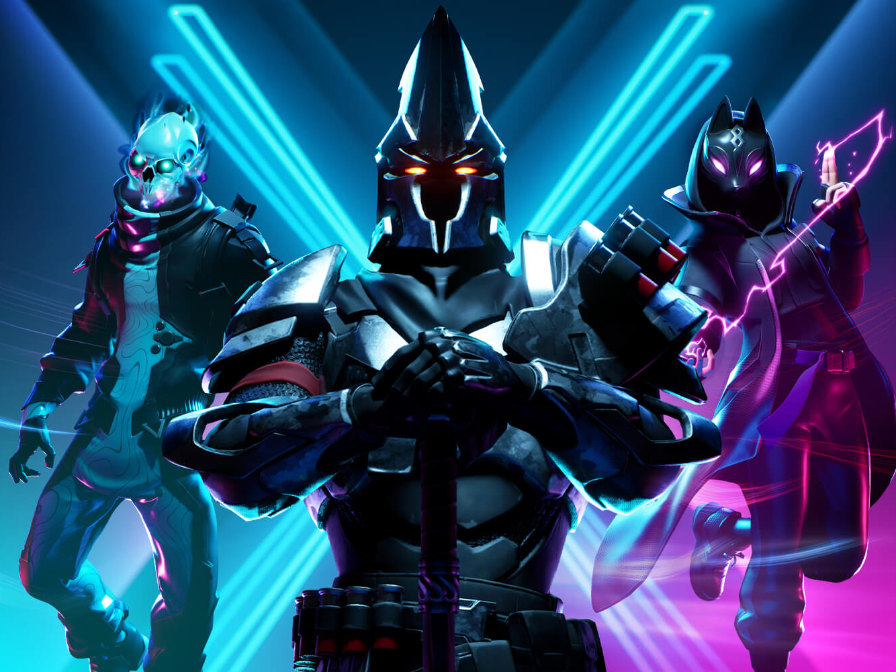

ARCHIVE / NEWS
Detroit: Become Human
A return to one of the original homepage stories, with its game imagery brought into a cleaner editorial layout.
ARCHIVE EDITION / 2018–2019
THE SUPER REVIEW ARCHIVE
Stories from the original student-project collection, presented as archive entries rather than today’s news.
ARCHIVE / NEWS
A return to one of the original homepage stories, with its game imagery brought into a cleaner editorial layout.

ARCHIVE / NEWS
The Warmind collection from the original Super Review project, gathered into one archive entry.

ARCHIVE / NEWS
A look back at the Fortnite images and homepage story from the original student project.
No matching stories. Try another game name or clear your search.